Cashiers find a customer by typing any part of the phone number, in any format, and create a new one in two clicks with the number already filled in. Numbers are saved with their country code (0500477818 becomes +966500477818), ready for SMS and WhatsApp.
At a busy counter the phone number is the customer’s identity. Standard Odoo 17 makes the cashier type it exactly as it was stored, and stores it exactly as it was typed.
Nothing new to learn for the cashier: it is the standard Customer screen of the POS.
Screenshots are taken from an Odoo 17 database with demo data: a Riyadh store (company in Saudi Arabia) and customers whose numbers were entered in different formats.
Point of Sale › Configuration › Settings, choose the Point of Sale, then the Customer Onboarding section: Default Customer Name with its Name, and International Phone Format (on by default). Flexible Phone Search is always active. Each terminal keeps its own values.
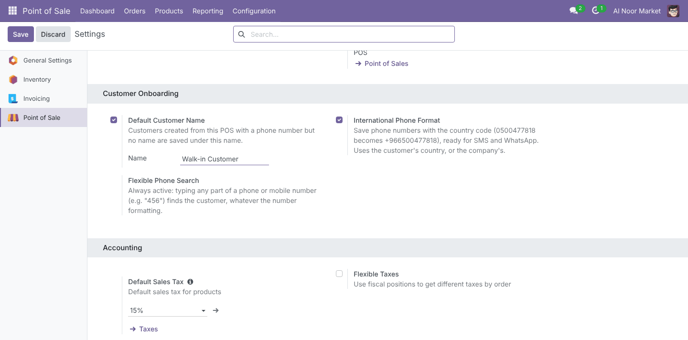
Typing 456 lists every customer whose phone or mobile contains 4-5-6 anywhere: at the end of +966 55 123 4567, in the middle of +966 (50) 456 7890, in the mobile 0504561234, even in a number stored with Arabic-Indic digits. Name, email and VAT search keep working as before.
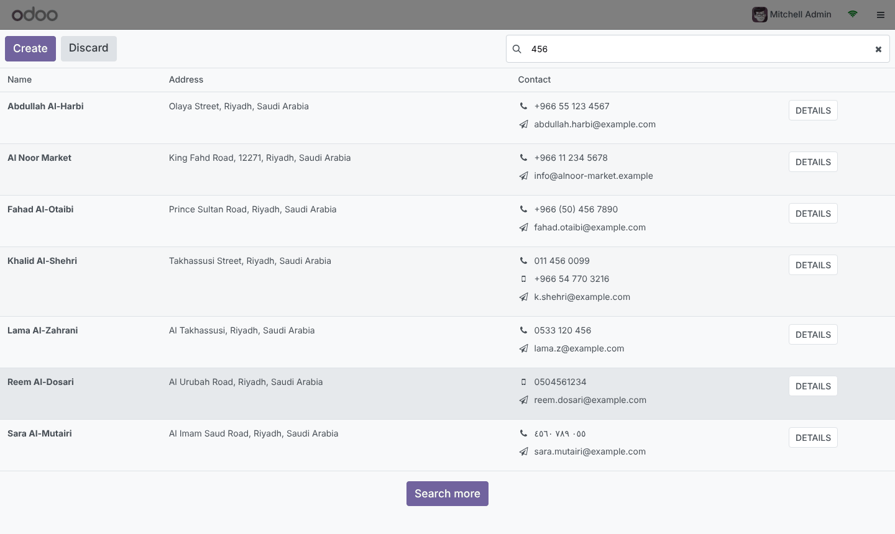
Spaces, dashes, brackets, dots and “+” are ignored on both sides. 050 456 78 finds the number stored as +966 (50) 456 7890; ٠٥٥٧٨٩ typed on an Arabic keyboard finds ٠٥٥ ٧٨٩ ٤٥٦٠. Leading zeros are ignored too, so the local habit (0500477818) still finds numbers saved with their country code.
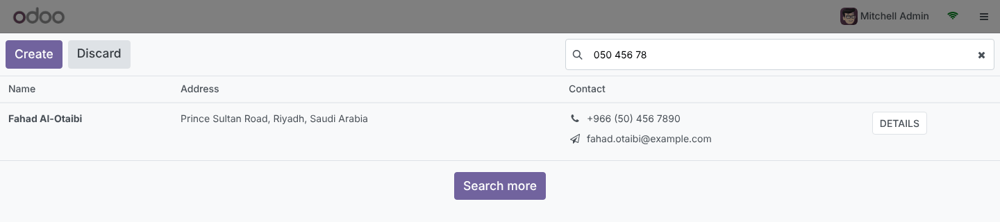
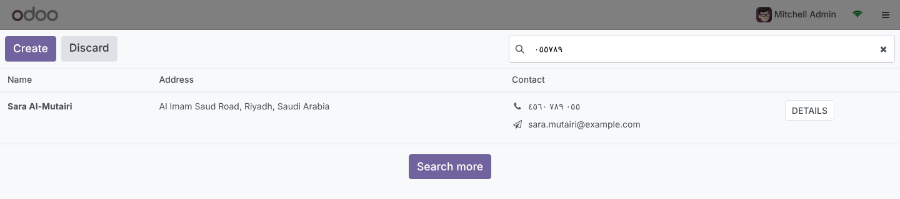
When a search finds nothing (locally, then on the server), the list shows No customer found for … and a Create customer with phone … button. The customer form opens with Phone pre-filled and the country of the company selected. The standard Create button pre-fills the phone the same way.
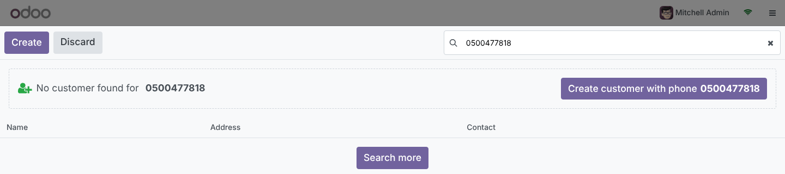
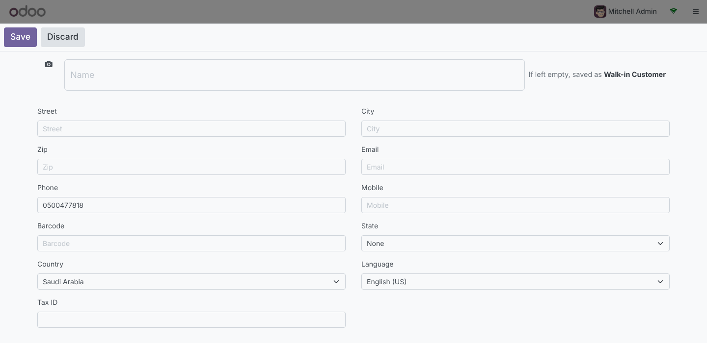
With Default Customer Name enabled, the form shows If left empty, saved as Walk-in Customer. A customer saved with a phone or mobile but no name gets that name and is set on the order. A typed name always wins, existing customers are never renamed, and with the option off the standard A Customer Name Is Required check applies.
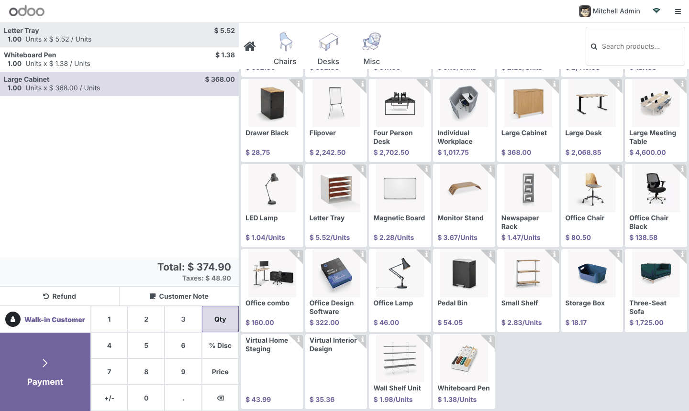
With International Phone Format enabled, Phone and Mobile are saved in E.164: the number typed as 0500477818 is stored as +966500477818. Formatting uses Odoo’s own phone_validation (Google libphonenumber rules), so it works for every country. The cashier still finds the customer by typing 0500477818.
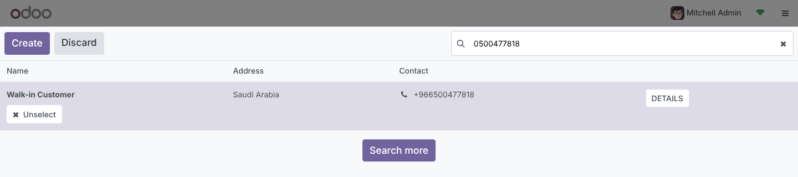
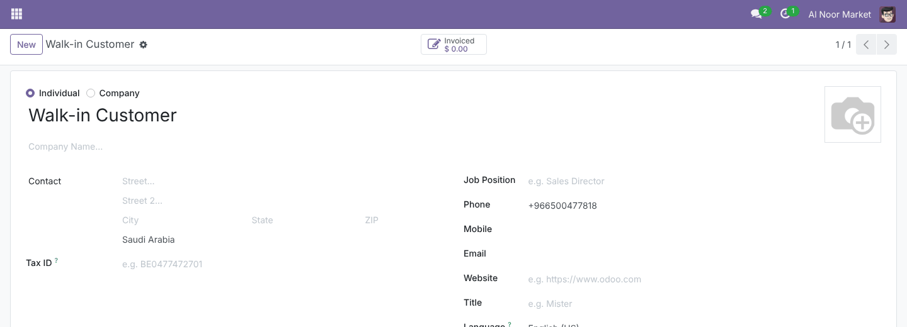
Every label, button, hint and setting is translated into Arabic and laid out right-to-left; phone numbers stay left-to-right so they read correctly.
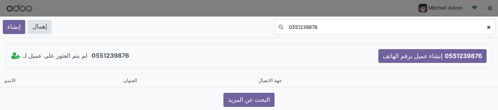
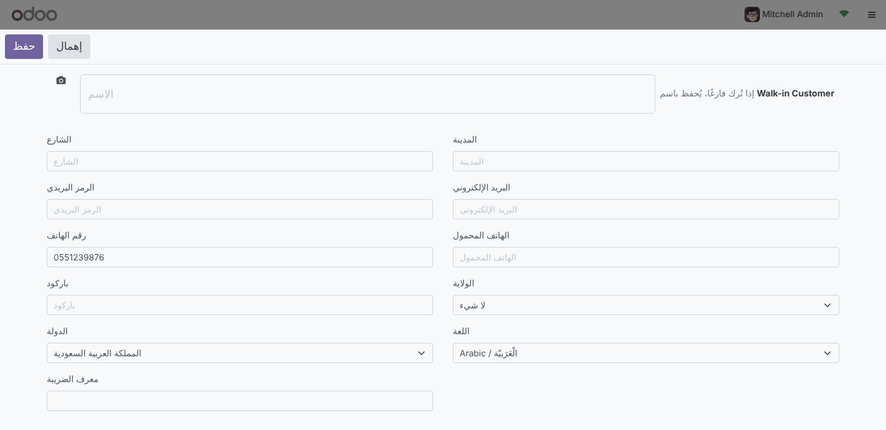
Examples from the automated tests, with International Phone Format enabled.
| Typed by the cashier | Country used | Saved |
|---|---|---|
| 0500477818 · 050 047 7818 · 00966500477818 · ٠٥٠٠٤٧٧٨١٨ | Saudi Arabia | +966500477818 |
| 01001234567 | Egypt | +201001234567 |
| 0501234567 | United Arab Emirates | +971501234567 |
| 06 12 34 56 78 | France | +33612345678 |
| 07911 123456 | United Kingdom | +447911123456 |
| (202) 555-0143 | United States | +12025550143 |
| 12345 | Saudi Arabia | 12345 (not a valid number: kept as typed) |
Measured on PostgreSQL 16 with 1,000,000 customers: one server search, 30 results, ordered like Odoo. The standard column runs the exact SQL generated by Odoo 17’s POS customer search.
| Typed | Matches | Standard Odoo 17 | With this module |
|---|---|---|---|
| 0551112233 (new customer) | 0 | 3.8 s | 1.5 ms |
| 757 4187 | 34 | 3.6 s | 1.2 ms |
| 4187 | 916 | 0.36 s | 3.0 ms |
| 456 | 8,732 | 0.28 s | 5.2 ms |
pos_phone_digits column (digits of phone and mobile) with a PostgreSQL trigram (GIN) index. On install it is filled in SQL, not record by record: about 22 seconds for one million customers. In the browser, each search runs once per keystroke and server look-ups wait for a pause in typing.Each of these is handled in the code and most are covered by the tests.
phonenumbers, the settings page warns and numbers are saved as typed. Without pg_trgm, search still works (about 0.24 s on a million customers) and a warning is logged.No new groups or record rules: the module follows the standard Point of Sale and Contacts access rights.
| Who | Can |
|---|---|
| Point of Sale / User | Search and create customers from the POS, as in standard Odoo. Creating customers needs Extra Rights › Contact Creation, which Odoo gives every new user by default. |
| Point of Sale / Administrator | Change the Customer Onboarding settings of each Point of Sale. |
| Multi-company | Standard company rules on customers and POS configurations apply; each POS uses its own company’s country. |
| Odoo version | 17.0, Community and Enterprise |
| Depends on | point_of_sale, phone_validation (both Community; phone_validation is already installed with Discuss) |
| Python dependency | phonenumbers for the international format (pip install phonenumbers if the settings page reports it missing); PostgreSQL extension pg_trgm recommended (enabled automatically when the database user owns the database) |
| Settings | Point of Sale › Configuration › Settings › Customer Onboarding |
| Models | pos.config (3 fields), res.config.settings, res.partner (stored, indexed pos_phone_digits; create_from_ui extended) |
| POS interface | Customer list, customer form and local customer search extended; no new screen |
| Automated tests | 28: 23 unit tests (digit search and index, upgrade from the 16.0 index, SQL/ORM parity, E.164 for 6 countries, default name rules, settings) and 5 browser tours (substring search with a server-only customer, phone pre-fill, default name, option off, Saudi E.164 flow) |
| Languages | English, Arabic |
| License | LGPL-3 |
Questions, a demo, or an adaptation to your own process? Get in touch.
✉ ibrahim.yahiah@gmail.com LinkedIn: Ibrahim YahiaAuthor: Ibrahim Yahia · License: LGPL-3